Data Validation and ETL With Glue
PART A: Create Glue Crawler for initial full load data
-
Navigate to the AWS Glue Console 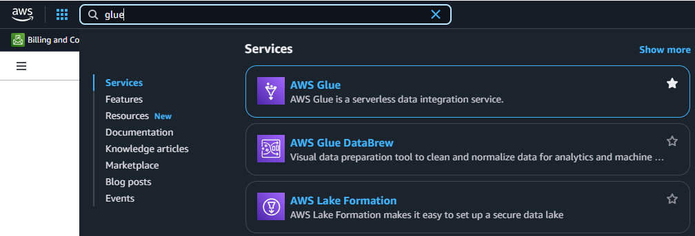
-
On the AWS Glue menu, under ‘Data Catalog’, select Crawlers. 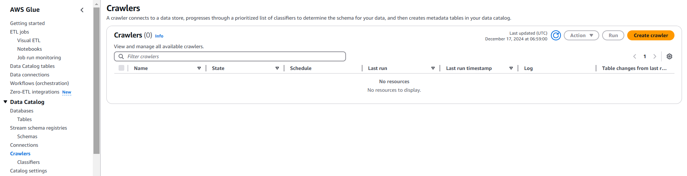
-
Click Create crawler.
-
Enter
glue-lab-crawleras the crawler name for initial data load. -
Optionally, enter the description. This should also be descriptive and easily recognized and Click Next. 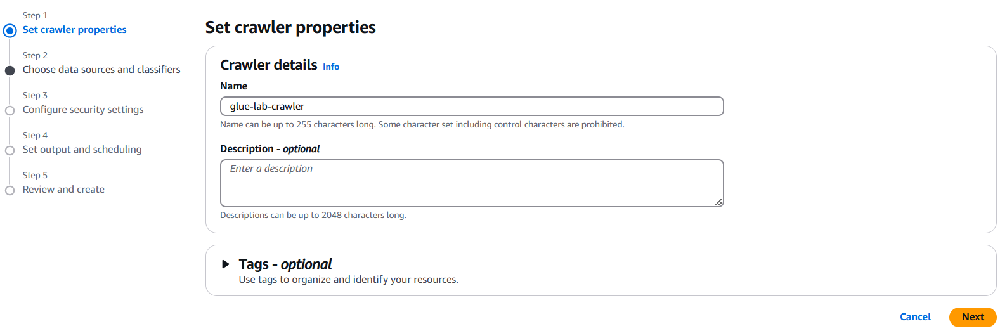
-
Under Choose data sources and classifiers select Not yet and click Add a data source 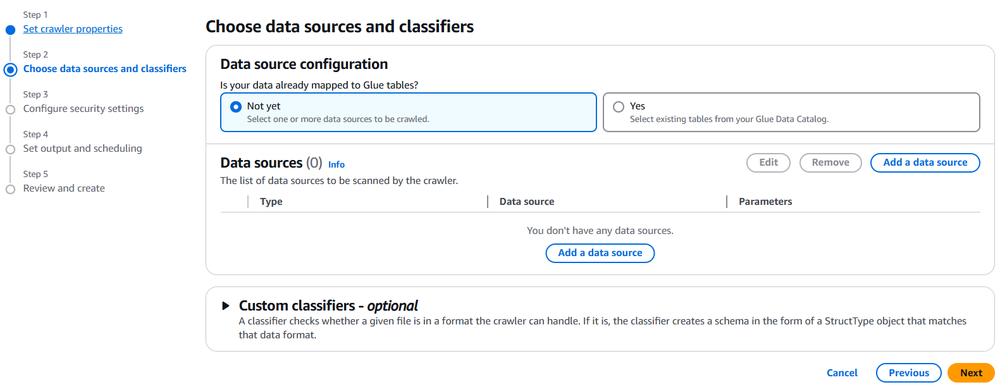
7.On the Add a data store page, make the following selections:
- For Data source, click the drop-down box and select S3.
- For Location of S3 data, select In this account
- For S3 path, browse to the target folder stored CSV files, e.g., s3://ingestion-data-skip-dms-lab/tickets/
- Leave all other parameters as default
- Click Add an S3 data source
-
Click Next 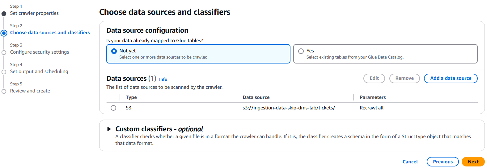
-
On the Configure security settings page, make the following selection:
- Under Existing IAM role select AWSGlueServiceRoleDefault which is pre-created for this lab.
- Information about AWSGlueServiceRoleDefault 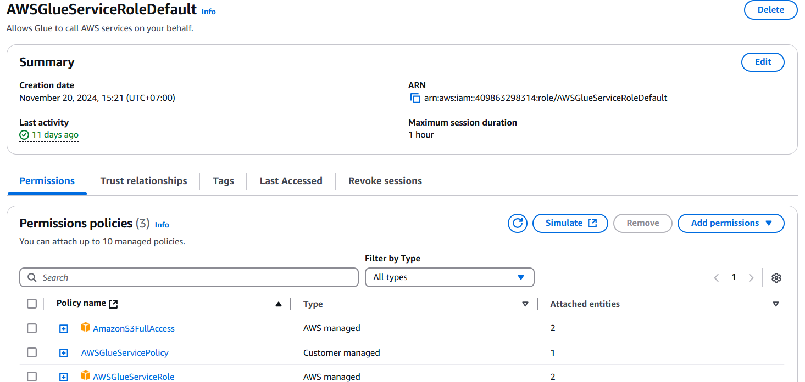
-
Click Next 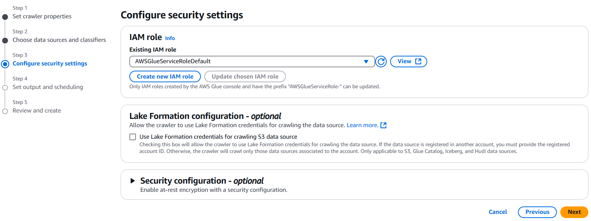
-
On the Set output and scheduling, under Target database, click Add database which pops-up another tab.
-
Enter
ticketdataas your database name and click Create database 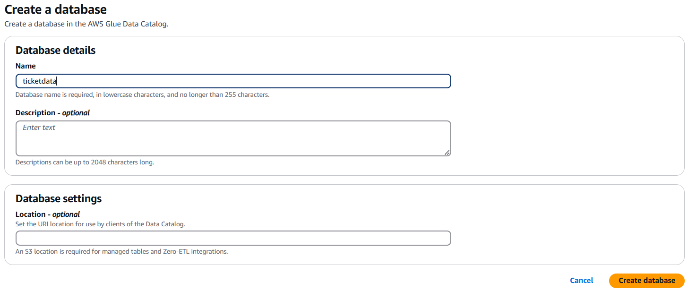
- Please get back to the Set output and scheduling page
- Select Target database as ’ticketdata’. Please use the refresh option right next to the dropdown to make sure that the new database we created is listing there.
- For Prefix added to tables (optional), leave the field empty.
- Under Crawler schedule as select the frequency as ‘On demand’
- Click Next 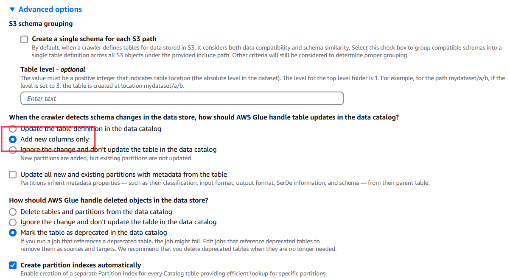 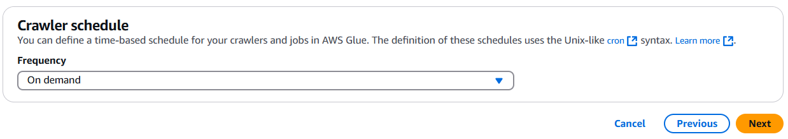
-
Review the information and click Create crawler. The crawler is now ready to run. 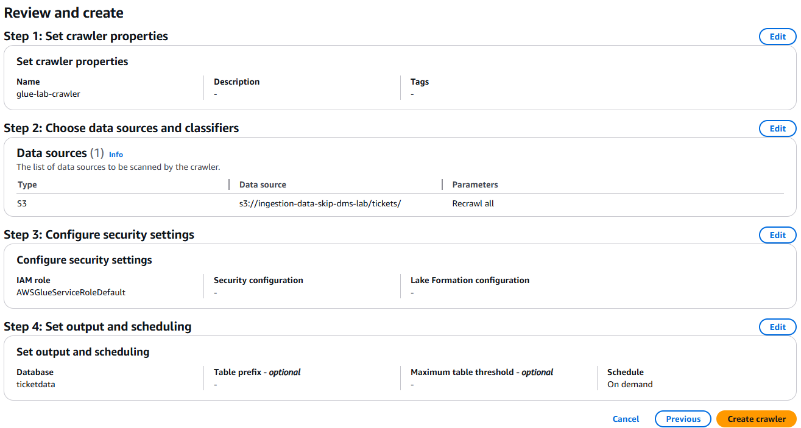
-
Execute the Crawler by clicking Run crawler button. 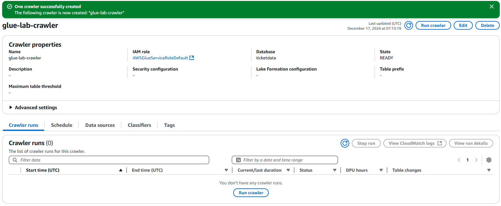 Crawler will change status from ‘Running’ to ‘Stopping’, wait until crawler comes back to ‘Ready’ state (the process will take a few minutes), you can see that it has created 15 tables. 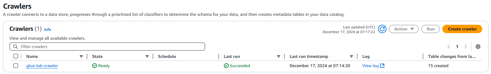
-
In the AWS Glue navigation pane, under Data Catalog click Databases → Tables. You can also click the ticketdata database to browse the tables. 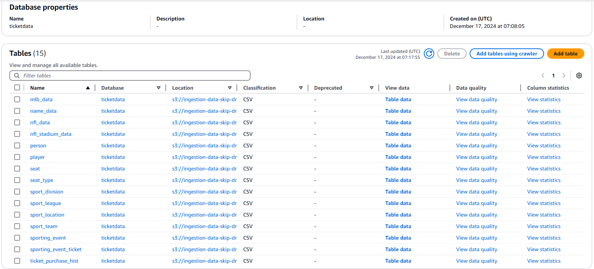
PART B: Data Validation Exercise
- Within the Tables section of your ticketdata database, click the person table.
- You may have noticed that some tables (such as person) have column headers such as col0,col1,col2,col3. In absence of headers or when the crawler cannot determine the header type, default column headers are specified.
- This exercise uses the person table in an example of how to resolve this issue.
-
Click Edit Schema option 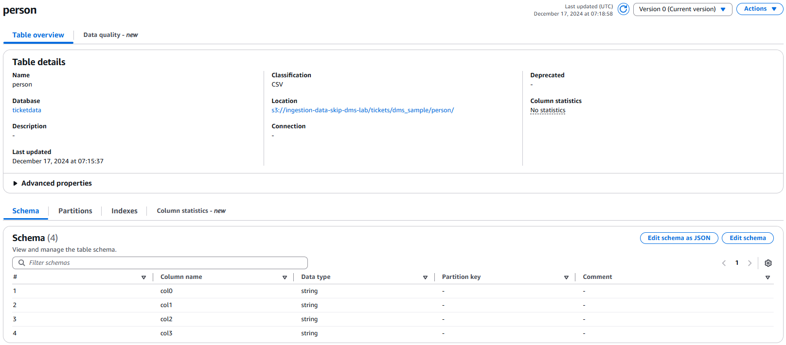
-
In the Edit Schema section, select the row for col0 (column name) and click Edit.
- Type id as the column name and click Save.
- Repeat the above steps to change the remaining column names to match those shown in the following figure: full_name, last_name and first_name. 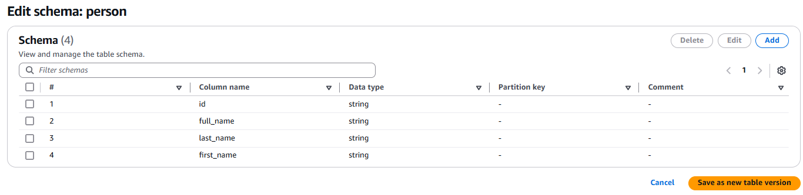
- Click Save as new table version.
PART C: Data ETL Exercise
Pre-requisite: To store processed data in parquet format, we need a new folder location for each table, eg. the full path for sport_team table look like this - s3://<s3_bucket_name>/tickets/dms_parquet/sport_team
-
In the left navigation pane, click ETL jobs.
-
Click “Visual ETL” 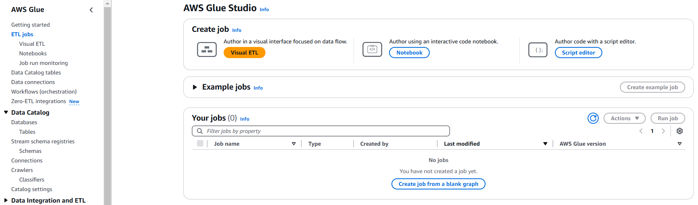
-
Select Amazon S3 from the Sources list to add a Data source - S3 bucket node. 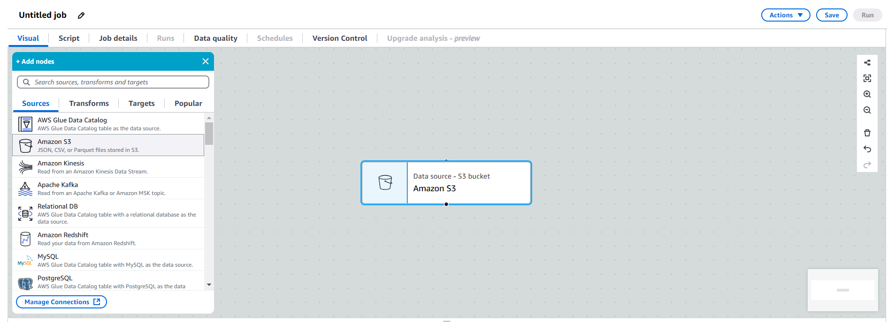
-
Select the Data source - S3 bucket node to show the data source properties.
-
In the panel on the right under “Data source properties - S3”, select Data Catalog table and choose the ticketdata database from the drop down. For Table, select the sport_team table. 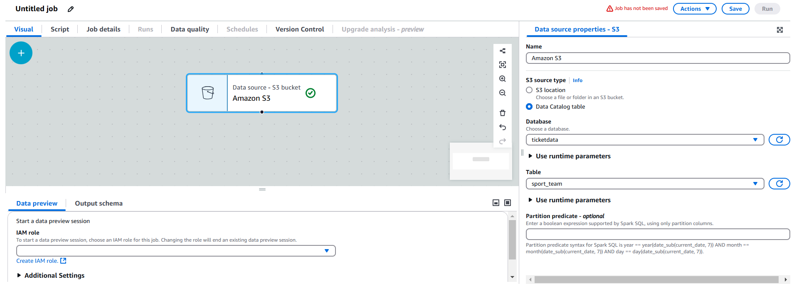
-
Click on the + button and select Change Schema from the Transforms list to add a Transform - Change Schema node. 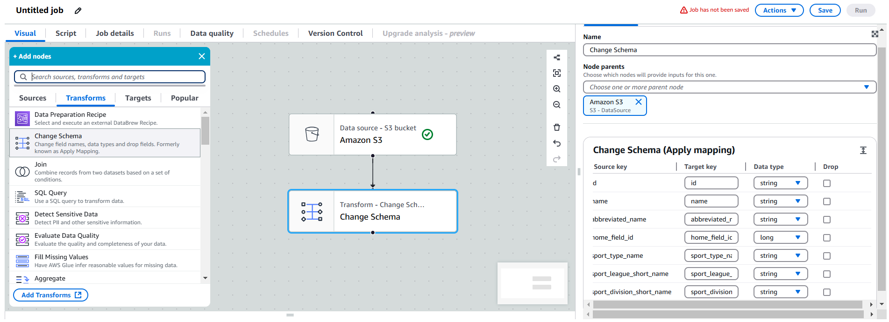
-
Select the Transform - Change Schema node to show the properties. In the Transform panel on the right, change the data type of id column to double in the dropdown. 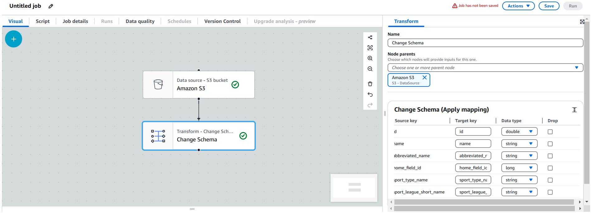
-
Click on the + button and select Amazon S3 from the Targets list to add a Data target - S3 bucket node. 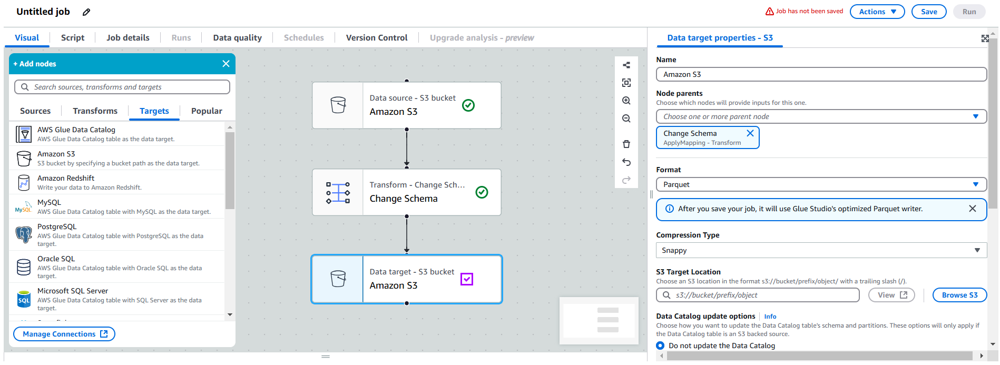
-
Select the Data target - S3 bucket node to show the properties. In the panel on the right, change the Format to Parquet in the dropdown. Under Compression Type, select Uncompressed from the dropdown.
-
Under “S3 Target Location”, select “Browse S3” browse to the “ingestion-data-skip-dms-lab” bucket, select “tickets” item and press “Choose”.
-
In the textbox, append dms_parquet/sport_team/ to the S3 url. The path should look similar to s3://ingestion-data-skip-dms-lab/tickets/dms_parquet/sport_team/ - don’t forget the / at the end. The job will automatically create the folder. 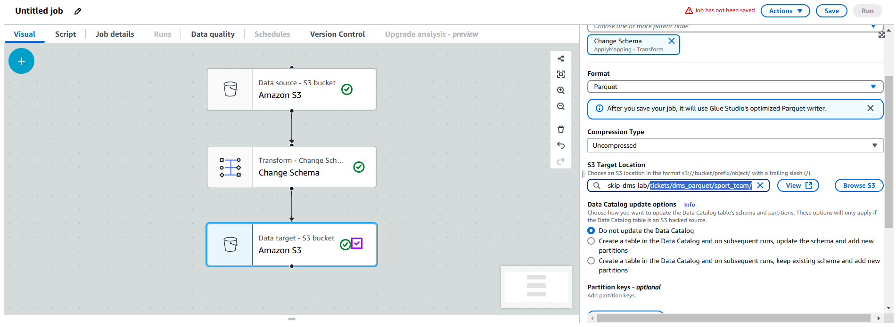
-
Finally, select the Job details tab at the top. Enter
Glue-Lab-SportTeamParquetunder Name. -
For IAM Role, select the role named similar to AWSGlueServiceRoleDefault. 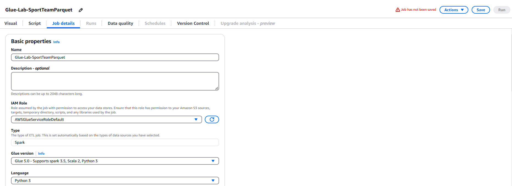
-
Scroll down the page and under Job bookmark, select Disable in the drop down. You can try out the bookmark functionality later in this lab.
-
Press the Save button in the top right-hand corner to create the job.
-
Once you see the Successfully created job message in the banner, click the Run button to start the job.
-
Select Jobs from the navigation panel on the left-hand side to see a list of your jobs.
-
Select Monitoring from the navigation panel on the left-hand side to view your running jobs, success/failure rates and various other statistics.
-
Scroll down to the Job runs list to verify that the ETL job has completed successfully. This should take about 1 minute to complete. 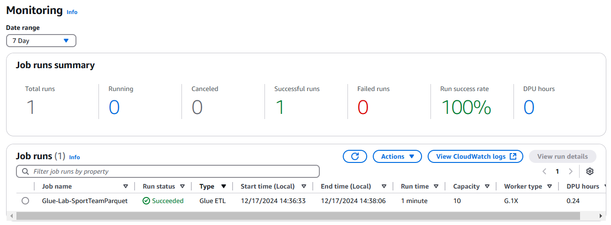
-
We need to repeat this process for an additional 4 jobs, to transform the sport_location, sporting_event, sporting_event_ticket and person tables.
- During this process, we will need to modify different column data types. We can either repeat the process above for each table, or we can clone the first job and update the details. The steps below describe how to clone the job - if creating manually each time, follow the above steps but make sure you use the updated values from the tables below.
-
Return to the Jobs menu, and select the Glue-Lab-SportsTeamParquet job by clicking the checkbox next to the name. 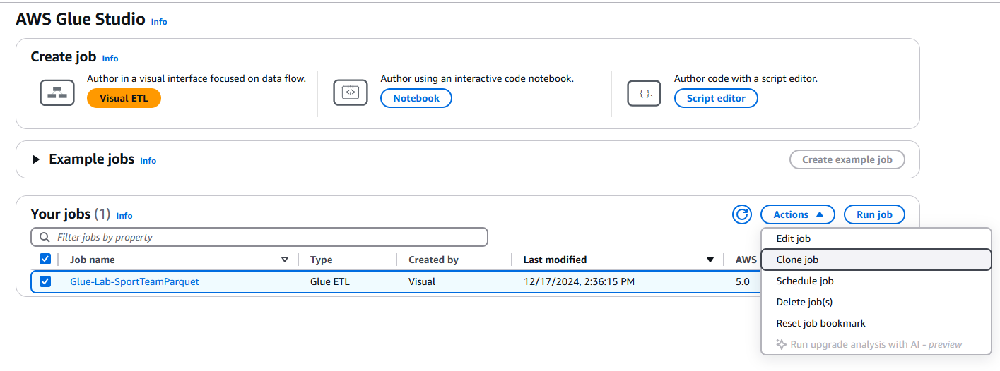
-
Under the Actions dropdown, select Clone job. Update the job as per the following tables, then Save and Run.
Sport_Location:
Create a Glue-Lab-SportLocationParquet job with the following attributes: 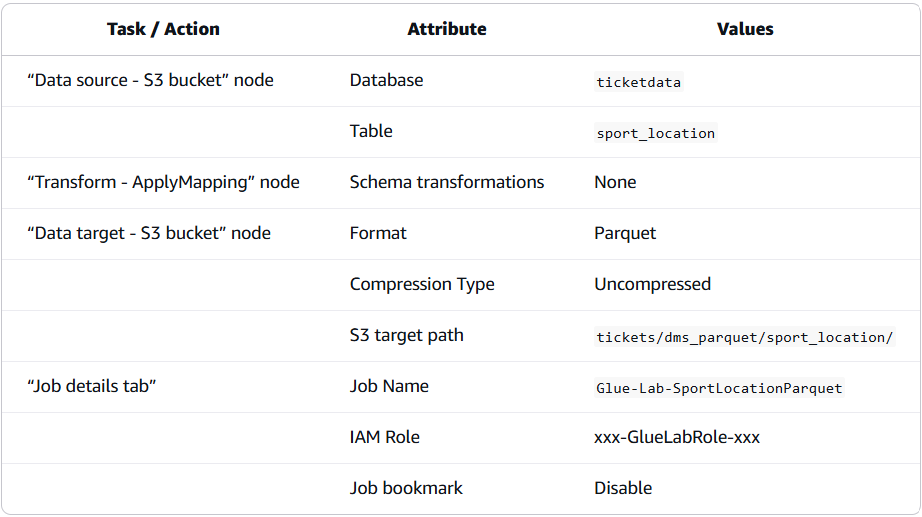
Sporting_Event:
Create a Glue-Lab-SportingEventParquet job with the following attributes: 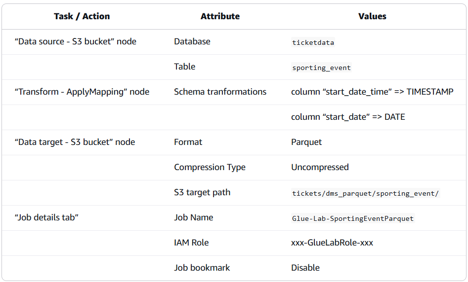
Sporting_Event_Ticket:
Create a Glue-Lab-SportingEventTicketParquet job with the following attributes:
Person:
Create a Glue-Lab-PersonParquet job with the following attributes: 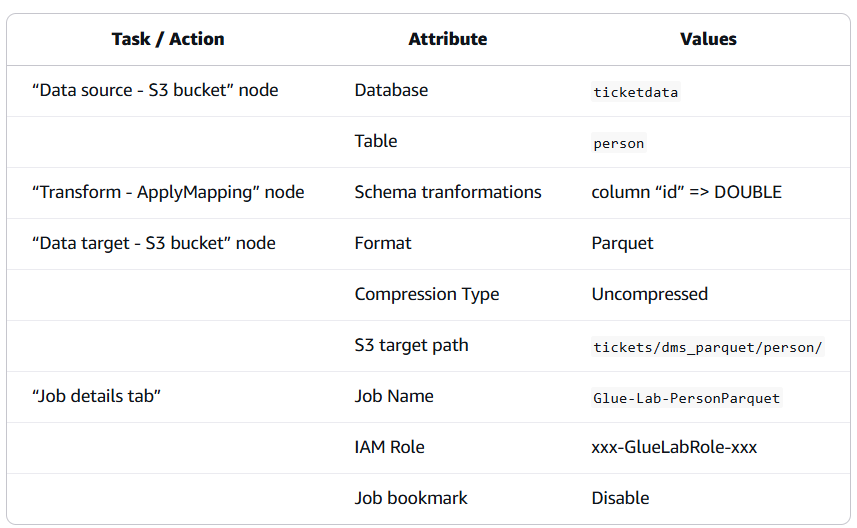
PART D: Create Glue Crawler for Parquet Files
-
In the Glue navigation menu, under Data Catalog select Crawlers. Click Create crawler. 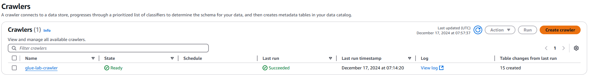
-
For Crawler name, type
glue-lab-parquet-crawlerand Click Next. 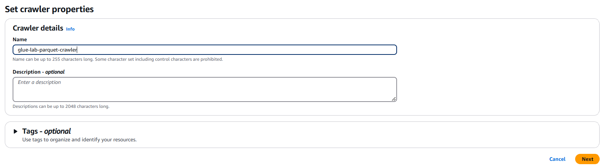 -
In next screen Choose data sources and classifiers, select Not yet and click Add a data source
-
In the Add data store screen
- For Choose a data store, select “S3”.
- For Location of S3 data, select “In this account”.
- For S3 path, specify the S3 Path (Parent Parquet folder) that contains the nested parquet files e.g., s3://xxx-dmslabs3bucket-xxx/tickets/dms_parquet/
- Leave all other parameters as default
- Click Add an S3 data source. 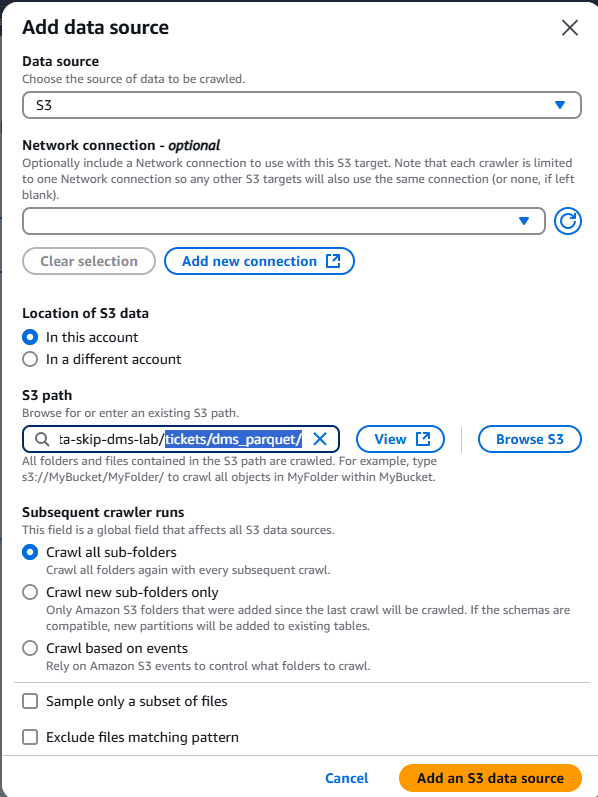
- In next screen Choose data sources and classifiers, click Next.
- On the Configure security settings page, select Choose an existing IAM role.
- For IAM role, select the existing role “xxx-GlueLabRole-xxx” and
- Click Next.
- On the Set output and scheduling page,
- Under Target database, choose your existing database which you created earlier e.g. ticketdata
- For the Prefix added to tables (optional), type parquet_
- For Crawler schedule select “On Demand” and Click Next. 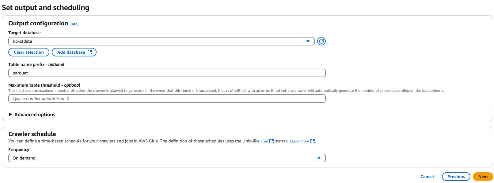
-
Review the summary page and click Create crawler. 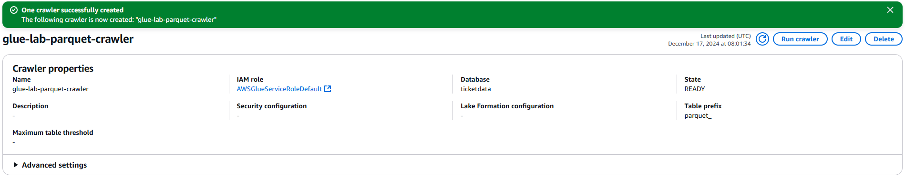
-
Click Run Crawler. Once your crawler has finished running, you should see that that tables were added, depending on how many parquet ETL conversions you set up in the previous section. 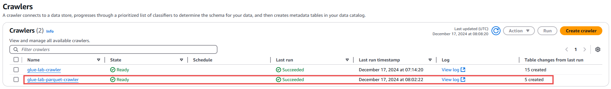
Confirm you can see the tables
- In the left navigation pane, click Tables.
- Add the filter parquet for Classification to return the newly created tables. 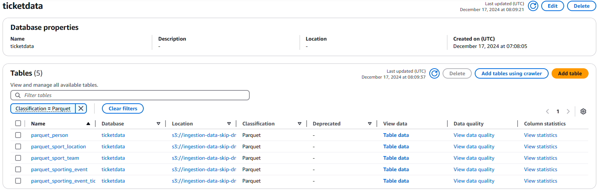
Congratulations! You have completed the Data Validation and ETL lab